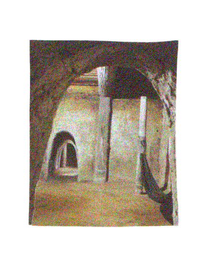
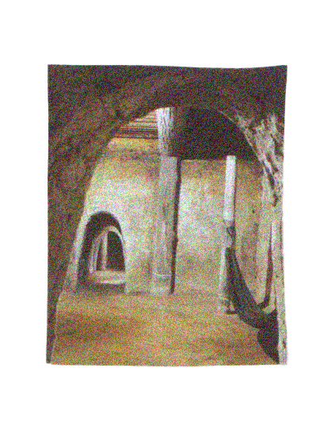
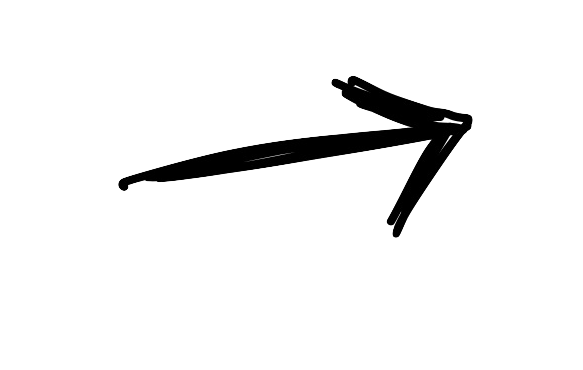
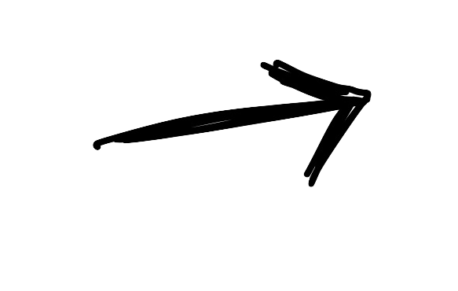

“Saigon… it’s a place where rains suddenly.” It now has become a city full of energy and heat, with all the noise of bikes and people chattering in the market. Ho Chi Minh City is a city that experienced rapid economic growt after the Vietnam War in 1975. There is no longer a hint of the war. Instead, it is now a bustling city with fashionable spots that remind visitors of Paris. At the same time, the Vietnamese traditional crafts still keeps its Asian intricate aesthetics. Ho Chi Minh City has both influences of Chinese and Western cultures, both elaborated in an elegant way.

 



 
